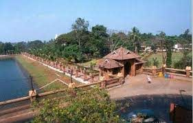
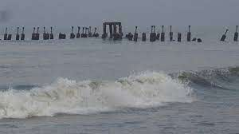

MananchiraPreviously known as Mananchira Maidan, this place held many football matches. Mananchira scores high as one of the places to visit in Kozhikode. This place provides tranquility to the visitors which is much sought after as one wants to escape the chaotic city life. It is a beautiful park covered with lawns, traditional buildings, a musical fountain, and an open-air theatre. This park is built around a man-made lake known as Mananchira lake. |
 |
Kozhikode beachSituated on the Malabar coast and endowed with natural beauty, Kozhikode beach should be a must in the itinerary of your visit to the city. This beach is renowned for the sunsets that tourists throng here to enjoy. Though the water is muddy and not suitable for swimming, still the stunning view of the Arabian Sea that the lighthouse offers more than compensates for the shortcoming. Payannakal, Putiyappa, Elathur, Beypore, all these beaches are part of the long stretch of Kozhikode beach. This beach lies on the western side of the city and is easily accessible through the four roads in the city. Location: Malabar Coast |
 |